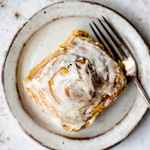
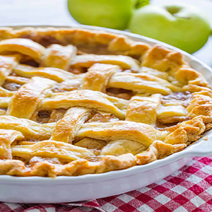
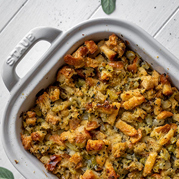
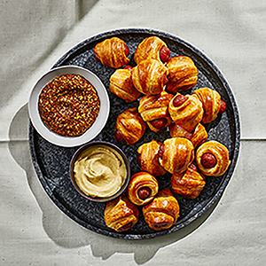

Quick and Easy Pumpkin Spice Cinnamon Roll Recipe

These are truly the BEST pumpkin cinnamon rolls you’ll ever eat. Made with pumpkin puree and cozy pumpkin pie spice in every bite, then topped with an addicting maple cream cheese icing. These pumpkin cinnamon rolls are bound to become a staple recipe in your home!
- ¾ cup milk (whole, 2% or almond milk will all work)
- ¼ cup granulated sugar
- 2 ¼ teaspoons quick rise yeast (1/4-ounce package yeast)
- ¾ cup pumpkin puree
- ¼ cup melted butter
- 1 egg, at room temperature
- 4 cups bread flour
- 2 tablespoons pumpkin pie spice
- 3/4 teaspoon salt
For the filling:
- 2/3 cup dark brown sugar
- ¼ cup butter, at room temperature
- 1 ½ tablespoons ground cinnamon
For the crream cheese glaze:
- 4 ounces cream cheese, at room temperature
- 3 tablespoons butter, at room temperature
- 1/4 cup powdered sugar
- 4 tablespoons pure maple syrup
- Pinch of salt
Instructions
- Warm milk to around 110 degrees F. I like to do this by placing milk in a microwave safe bowl and microwaving it for 45 seconds. It should be like warm bath water. Transfer warm milk and sugar to the bowl of an electric mixer and sprinkle yeast on top. Stir pumpkin puree, room temperature egg and melted butter, mixing until smooth and well combined and creamy. Next stir in bread flour, pumpkin pie spice and salt with a wooden spoon until a dough begins to form.
- Place dough hook on mixer and knead dough on low speed for 8-10 minutes. Dough should form into a nice ball and be slightly sticky. (If you don’t want to use an electric mixer, you can use your hands to knead the dough for 8-10 minutes on a well-floured surface.)
- Transfer dough ball to a large bowl greased with olive oil or nonstick cooking spray, then cover with plastic wrap and a warm towel. Allow dough to rise for 1 hour or until doubled in size. This may more or less time depending the humidity and temperature in your home.
- After dough has doubled in size, transfer dough to a well-floured surface and roll out into a 14x16 inch rectangle. Spread softened butter over dough, leaving a ¼ inch margin at the far side of the dough.
- In a small bowl, mix together brown sugar and cinnamon. Use your hands to sprinkle mixture over the buttered dough, then rub the sugar into the butter.
- Tightly roll dough up the dough, starting from the 14-inch side (the smaller side) and place seam side down making sure to seal the edges of the dough as best you can. You will probably need to cut off about an inch off the ends of the dough as the ends won’t be as full of cinnamon sugar as we’d want it to be. Then cut into 1 inch sections with a serrated knife. You should get 12 rolls. I like to make dents in the dough before cutting as demonstrated in the photos, to make 12 even rolls.
- Tightly roll dough up the dough, starting from the 14-inch side (the smaller side) and place seam side down making sure to seal the edges of the dough as best you can. You will probably need to cut off about an inch off the ends of the dough as the ends won’t be as full of cinnamon sugar as we’d want it to be. Then cut into 1 inch sections with a serrated knife. You should get 12 rolls. I like to make dents in the dough before cutting as demonstrated in the photos, to make 12 even rolls.
- Preheat oven to 350 degrees F. Remove plastic wrap and towel and bake the cinnamon rolls for 20-25 minutes or until just slightly golden brown on the edges. You want to under bake them a little so they stay soft in the middle, that’s why we want them just slightly golden brown. Allow them to cool for 10 minutes before frosting. Makes 12 cinnamon rolls
- To make the frosting: In the bowl of an electric mixer or in a medium bowl, combine cream cheese, butter, powdered sugar, maple syrup and salt. Beat until smooth. Spread over the pumpkin cinnamon rolls and serve! Sprinkle cinnamon rolls with a little cinnamon for a pretty look. Enjoy!
# Content for New article Tag Goes Here
Apple Pie recipe with the Best Filling

Classic Apple Pie Recipe with an irresistible homemade apple pie filling. From the best flaky pie crust to the generous saucy center, this recipe always gets glowing reviews. This is the pie everyone has to make for Thanksgiving!
For the crust:
- 2 1/2 cups all-purpose flour, plus more to dust
- 1/2 Tbsp granulated sugar
- 1/2 tsp sea salt
- 1/2 lb COLD unsalted butter, (2 sticks) diced into 1/4" pieces
- 7 Tbsp ice water, (7 to 8 Tbsp)
For the filling:
- Crust
- 2 1/4 lbs Granny Smith Apples, peeled, cored 6-7 apples (7 cups thinly sliced)
- 1 1/2 tsp cinnamon
- 8 Tbsp unsalted butter
- 3 Tbsp all-purpose flour
- 1/4 cup water
- 1 cup granulated sugar
- 1 egg , + 1 Tbsp water, for egg wash
Instructionns:
- Make the pie crust recipe and chill per instructions while preparing the filling. Preheat oven to 425˚F.
- Melt butter in a medium saucepan over medium heat. Whisk in 3 Tbsp flour then simmer for 1 minute, whisking constantly. Whisk in 1/4 cup water, 1 cup sugar and bring to a boil. Reduce heat and continue simmering 3 minutes, whisking frequently then remove from heat.
- Peel, remove cores and thinly slice 7 cups of apples and place them in a large bowl. Sprinkle the top with 1 1/2 tsp cinnamon and toss to combine. Pour the sauce over the apples and stir to coat the apple slices.
- Sprinkle your work surface with flour and roll out bottom pie crust to a 12" diameter circle. Wrap it around your rolling pin to transfer it to the 9" pie plate. Add apple mixture, mounding slightly in the center and being careful not to get the filling on the edges which would make it difficult to seal.
- Roll second crust into an 11" round and cut into 10 even thickness strips using a pizza cutter. Arrange strips in a woven lattice pattern over the top (see video tutorial). Beat together 1 egg and 1 Tbsp water and brush the top with egg mixture.
- Bake at 425˚F in the center of the oven for 15 minutes. Reduce the heat to 350˚F and continue baking another 45 minutes or until apples are soft and filling is bubbling through the vents.* Rest at room temp 1 hour before serving.
## Content for New article Tag Goes Here
The Best Creamy Potato Soup
.jpg)
An easy and delicious creamy potato soup recipe that can be made in just one pot! Loaded with bacon and creamy potato goodness, this is a favorite comfort food in my household.
Ingredients:
- 6 strips (uncooked) bacon cut into small pieces
- 3 Tablespoons butter unsalted or salted will work
- 1 medium yellow onion chopped (about 1.5 cup/200g)
- 3 large garlic cloves minced
- ⅓ cup all-purpose flour (42g)
- 2 ½ lbs gold potatoes peeled and diced into pieces no larger than 1” (this was about 6 Large potatoes for me/1.15kg)
- 4 cups chicken broth (945ml)
- 2 cups milk (475ml)
- ⅔ cup heavy cream (155ml)
- 1 ½ teaspoon* salt
- 1 teaspoon ground pepper
- ¼ - ½ teaspoon ancho chili powder**
- ⅔ cup sour cream (160g)
- Shredded cheddar cheese, chives, and additional sour cream and bacon for topping optional
Instructions:
- Place bacon pieces in a large Dutch Oven or soup pot over medium heat and cook until bacon is crisp and browned.
- Remove bacon pieces and set aside, leaving the fat in the pot.
- Add butter and chopped onion and cook over medium heat until onions are tender (3-5 minutes).
- Add garlic and cook until fragrant (about 30 seconds).
- Add diced potatoes to the pot along with chicken broth, milk, heavy cream, salt, pepper, and ancho chili powder. Stir well.
- Bring to a boil and cook until potatoes are tender when pierced with a fork (about 10 minutes).
- Reduce heat to simmer and remove approximately half*** of the soup to a blender (be careful, it will be hot!) and puree until smooth (half is about 5 cups of soup, but just eyeballing the amount will be fine. Alternatively you can use an immersion blender.).
- Return the pureed soup to the pot and add sour cream and reserved bacon pieces, stir well.
- Allow soup to simmer for 15 minutes before serving.
- Top with additional sour cream, bacon, cheddar cheese, or chives. Enjoy!
# Content for New article Tag Goes Here
Our Favorite Buttery Herb Stuffing Recipe

Seriously, it’s our favorite stuffing and the only one I make now. The edges are golden and crunchy, the inside is soft. It’s wildly flavorful and buttery and filled with herbs and most importantly, a delicious neutral flavor that truly goes with any meal.
Ingredients:
- 18 to 24 ounces bread cubes, (1.5 loaves of bread, or about 12 to 14 cups) preferably toasted or stale
- 1 cup unsalted butter
- 3 cups diced sweet onion, roughly 2 large onions
- 2 cups diced celery
- 6 garlic cloves, minced
- kosher salt and pepper
- 3 tablespoons chopped fresh sage
- 3 tablespoons chopped fresh parsley
- 3 tablespoons chopped fresh rosemary
- 2 1/2 cups chicken or vegetable stock
- 2 large eggs
- a mixture of fresh herbs for sprinkling
Instructions:
- Note about the bread cubes! You have options here. Stale or toasty bread works best. The first option is that you can cut 1 ½ pounds of bread into cubes, place it in a large baking dish, loosely tent with foil and let it sit overnight. You can also cut the cubes and put them in oven, toasting them at 350 degrees F until they are like croutons, about 15 minutes or so. Finally, you can buy the toasted bread cubes in bags from the store. It’s your choice! You can also choose the size of your cubes. They can be small or larger for a more rustic stuffing.
- My mom has always used a mixture of stale and fresh bread. Also, I like to use different kinds of bread (usually two), like a sourdough and italian, and mix the cubes. It provides great texture.
- Preheat the oven to 350 degrees F. Brush a 9x13 baking dish (you can also use a larger baking dish or a larger foil roasting pan too!) with melted butter, olive oil or spray with nonstick spray. Place the bread in a large mixing bowl (this may be easier for you to stir!) or the baking dish that you will bake it in. You can also separate this into two baking dishes if it's easier.
- Heat the butter in a large skillet or dutch oven over medium heat. Once melted, stir in the onion, celery and garlic with a big pinch of salt and pepper - at least ½ to 1 teaspoon each. Cook until the onions and celery soften, about 8 to 10 minutes. Stir in the sage, parsley and rosemary. Cook for another minute. Stir in 1 cup of stock.
- Pour the onion celery mixture over the bread crumbs and toss well to coat.
- In a small bowl or measuring cup, whisk together the remaining 1 ½ cups stock and 2 eggs.
- Pour that mixture into the bread cubes and stir and fold the bread cubes until thoroughly combined. Bake the stuffing for 45 to 50 minutes, until the internal temperature registers 160 degrees F. If the stuffing is getting too browned, you can tent it with foil.
- I have successfully made this a day ahead of time and reheated it - it’s just as good! emove the pan from the fridge 60 minutes before reheating it. You can also use this mixture to stuff the bird if you wish!
- To serve 4: Cut this recipe in half exactly and bake it in an 8x8 or 9x9 inch dish. I bake for the same amount of time.
- To serve 12 to 18: Double this recipe exactly. Bake in a large baking dish, like a 10x15 roasting pan, or baking in two 9x13 baking dishes. I bake for roughly the same amount of time, or about 15 minutes longer.
# Content for New article Tag Goes Here
Simple and Easy Pigs in a Blanket Recipe

A party isn’t a party without pigs in a blanket. And making the iconic crowd-pleaser doesn’t get easier than with this recipe of mini smoked cocktail sausages (or petit hot dogs) wrapped in store-bought buttery pastry. Prepared crescent roll dough does a lot of heavy lifting here, but you can use puff pastry if you prefer.
Ingredients:
- 8-oz. can refrigerated crescent rolls
- 10-oz. package smoked cocktail sausages or franks
- large egg, beaten to blend Dijon mustard (for serving)
Instructions:
- Place racks in upper and lower thirds of oven; preheat to 375°. Unroll one 8-oz. can refrigerated crescent rolls onto a cutting board and tear sheets at perforations to separate into triangles. Cut each triangle lengthwise into 3 thin equal-size smaller triangles. Tidy up edges to make even if desired.
- Working one at a time, place sausages from one 10-oz. package smoked cocktail sausages or franks on the short ends of triangles of dough; roll up and gently press point end to seal. Divide between 2 parchment-lined baking sheets, placing point side down (you should have 24 total). Brush dough with 1 large egg, beaten to blend. Bake until dough is cooked through and golden brown, 13–15 minutes.
- Transfer pigs in a blanket to a platter and serve with Dijon mustard for dipping.
# Content for New article Tag Goes Here
Content for New main Tag Goes Here